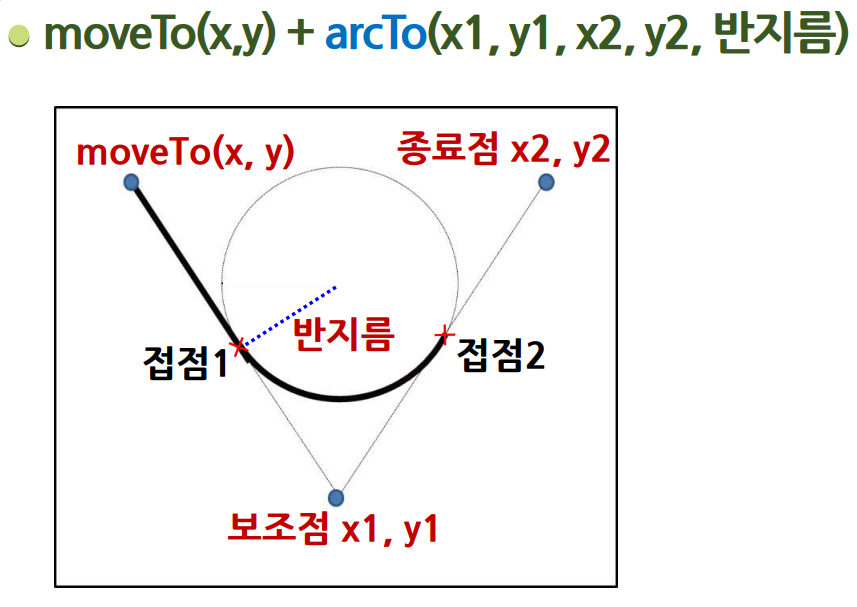

캔버스 그림 영역 지정 및 객체 생성
패스 기반의 그리기 메서드
| beginPath() | 이전의 패스를 모두 지우고 새로운 패스를 그린다. |
| closePath() | 현재 패스를 닫는다.(패스 그리는 것을 종료) |
| moveTo(x,y) | 주어진 점을 시작으로 새로운 서브패스를 만든다. |
| lineTo(x,y) | 바로 이전의 점과 현재의 점을 연결하는 선을 그린다. |
| rect(x,y,w,h) | 사각형을 그린다 |
| arc(…) | 원/원호를 그린다. |
| stroke() | 현재 패스에 있는 도형들을 선 스타일로 실제로 캔버스에 출력한다. |
| fill() | 현재 패스에 있는 도형들을 채우기 스타일로 실제로 캔버스에 출력한다. |
원/원호 그리기
| arc(x, y, 반지름, 시작각도, 종료각도, 그리는_방향); | |
| x, y, 반지름 | → 원의 중심의 좌표와 반지름 |
| 시작각도, 종료각도 | → 라디안 단위 사용(360도=2π), → 각도* Math.PI/180 |
| 그리는 방향 |
false → 기본값. 시계방향으로 그리는 경우 true → 시계 반대방향으로 그리는 경우 |
직선과 접하는 원호 그리기
| moveTo(x,y) + arcTo(x1, y1, x2, y2, 반지름) | |
|  | |
베지에 곡선 그리기
| 베지에 곡선 Bezier Curve | |
| n개의 점으로부터 얻어지는 (n-1)차 곡선 | |
| 2차 베지에 곡선 | • quadraticCurveTo(제어점x, 제어점y, 종료점x, 종료점y) |

|
|
| 3차 베지에 곡선 | • bezierCurveTo(제어점x1, 제어점y1, 제어점x2, 제어점y2, 종료점x, 종료점y) |